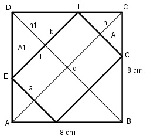
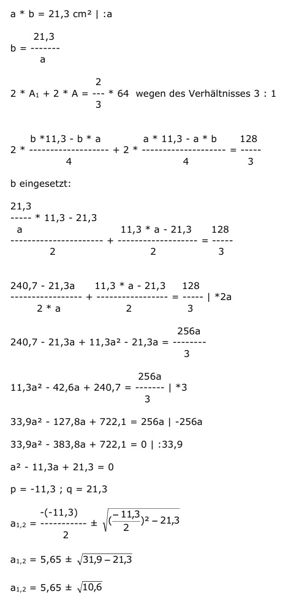

Flächenberechnungen Aufgabe 76 Berechnen Sie die Länge der Seiten des einbeschriebenen Rechtecks. Die Flächen des Quadrates und des Rechtecks verhalten sich wie 3 : 1.  AQuadrat = 8 cm * 8 cm = 64 cm² AQuadrat 3 ----------- = --- | * ARechteck ARechteck 1 AQuadrat = 3 * ARechteck |:3 AQuadrat ARechteck = ---------- 3 64 ARechteck = ---- = 21,3 cm² 3 Satz von Pythagoras im Dreieck ABC: d² = 8² + 8² d² = 64 + 64 d² = 128 |√ d = 11,3 cm d - a h1 = ------- 2 d - b h = ------- 2 b * (11,3 - a) ----------------- b * h1 2 11,3 * b - a * b A1 = --------- = ------------------ = ------------------ 2 2 4 a * (11,3 - b) ----------------- a * h 2 11,3 * a - a * b A = ------- = ------------------- = ------------------- 2 2 4  a1,2 = 5,65 ± 3,26 a
1 = 5,65 + 3,26 = 8,9 cm = b a2 = 5,65 - 3,26 = 2,4 cm